Amiante
L'Amiante est une fibre minérale naturelle cancérogène (CIRC 1, C1 RSST, A1 ACGIH). Sa vente est interdite au Canada depuis le 30 décembre 2018, mais le risque demeure dans les bâtiments anciens, certains équipements miniers et des résidus. Toutes les formes (chrysotile, crocidolite, amosite, trémolite, actinolite, anthophyllite) causent l'asbestose, le mésothéliome, le cancer du poumon, du larynx et de l'ovaire. Le RSST et le CSTC encadrent strictement la gestion sécuritaire (inventaire, étiquetage, niveaux de risque, vestiaire double, Protection respiratoire (APR) adapté). D'autres fibres minérales (FCR, laines, talc fibreux) demandent aussi une attention particulière.
Table des matières
- Qu'est-ce que l'amiante
- Définition et classification des fibres
- Familles d'amiante
- Usages historiques et matériaux
- Effets sur la santé
- Réglementation
- Normes d'exposition
- Gestion de l'amiante
- Autres fibres minérales
- Application terrain
- Ressources
Qu'est-ce que l'amiante
Minéral naturel aux propriétés exceptionnelles
- Résiste à la chaleur, aux produits chimiques, à l'usure.
- Bon isolant thermique et électrique.
- Peut se filer, se tisser, s'ajouter à du ciment.
Étymologie : du grec amiantos, « indestructible ». Asbestos en anglais. Historiquement utilisé dans une variété d'industries.
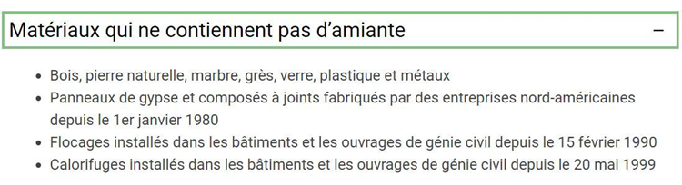
Toucher l'image pour l'agrandirDéfinition et classification des fibres
Fibre (sens hygiène) : particule allongée dont la longueur est au moins 3 fois supérieure au diamètre (rapport L/D ≥ 3). Convention OMS / INRS pour la microscopie optique : L > 5 µm, D < 3 µm, L/D > 3.
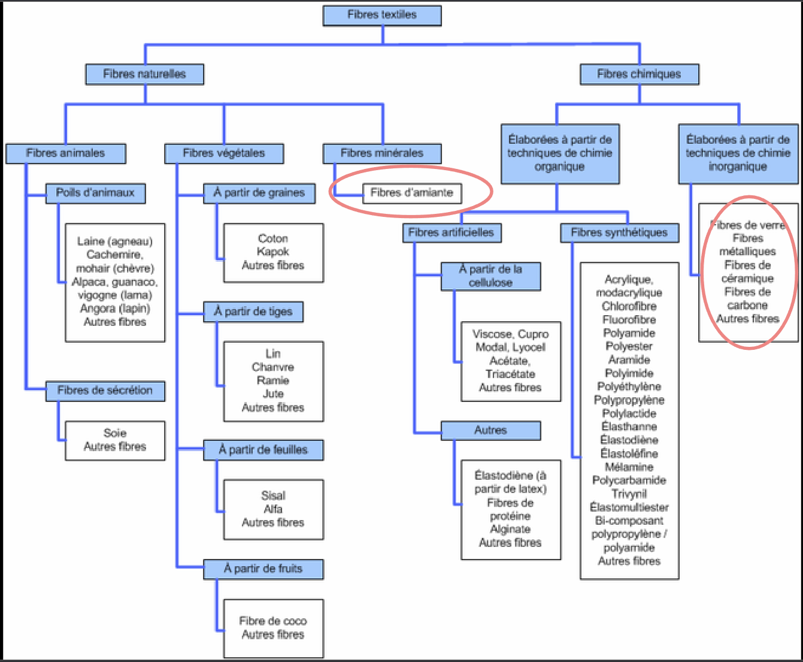
Toucher l'image pour l'agrandirClasses de fibres
| Type | Exemples |
|---|---|
| Minérales naturelles | Amiante (chrysotile, crocidolite, amosite, anthophyllite, trémolite, actinolite), wollastonite, sépiolite |
| Minérales artificielles (MMVF) | Laine de verre, laine de roche / laitier, fibres céramiques réfractaires (FCR), fibres d'alumine |
| Organiques naturelles | Cellulose, coton, lin, soie |
| Organiques artificielles | Viscose, acétate de cellulose |
| Synthétiques | Aramides (Kevlar), polyester, polyéthylène, nanotubes de carbone (voir Nanoparticules) |
Familles d'amiante
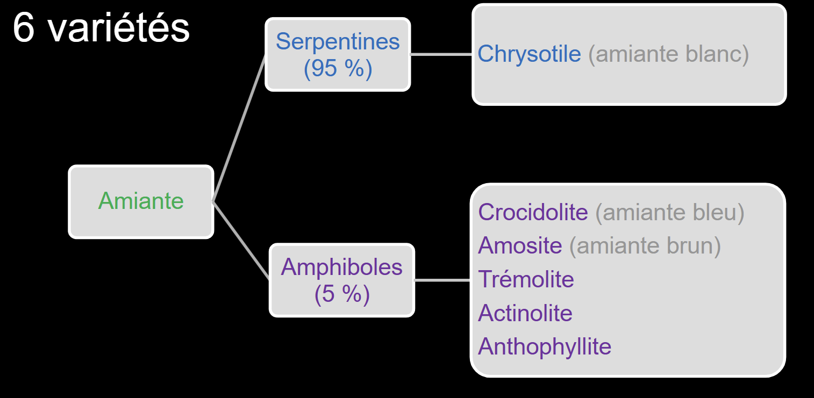
Toucher l'image pour l'agrandir| Famille | Variétés | Caractéristiques |
|---|---|---|
| Serpentines | Chrysotile (amiante blanc) | Fibres ondulées, souples, plus communes, historiquement produites au Québec |
| Amphiboles | Crocidolite (bleu), amosite (brun), trémolite, actinolite, anthophyllite | Fibres en aiguille (rectilignes), risque plus élevé pour la santé |
Le chrysotile représentait > 90 % de la production historique au Québec (mines de Thetford, Asbestos).
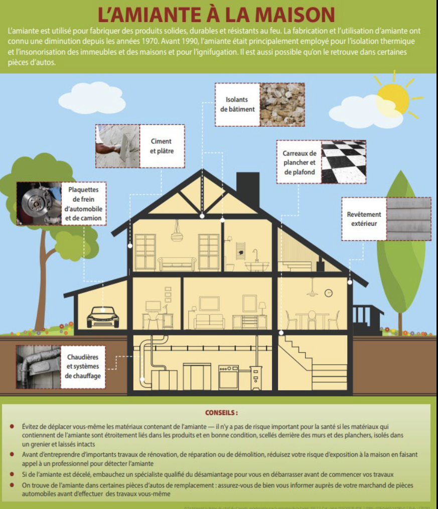
Toucher l'image pour l'agrandirUsages historiques et matériaux
Usages historiques
- Isolation thermique, ignifuge (chaudières, navires, bâtiments).
- Fibrociment (toitures, conduites, panneaux).
- Garnitures de frein, embrayages.
- Textiles ignifuges.
- Mastics, joints, calorifuges.
Matériaux susceptibles de contenir de l'amiante
Carreaux de plancher en vinyle, plâtre, mastic, colles, calfeutrage, isolation de tuyaux et réservoirs, bardeaux, freins, joints, panneaux. Particulièrement dans les bâtiments construits avant 1980.
Effets sur la santé
Maladies pulmonaires graves, à apparition tardive ; voir Toxicité du système respiratoire et Maladies professionnelles en mine
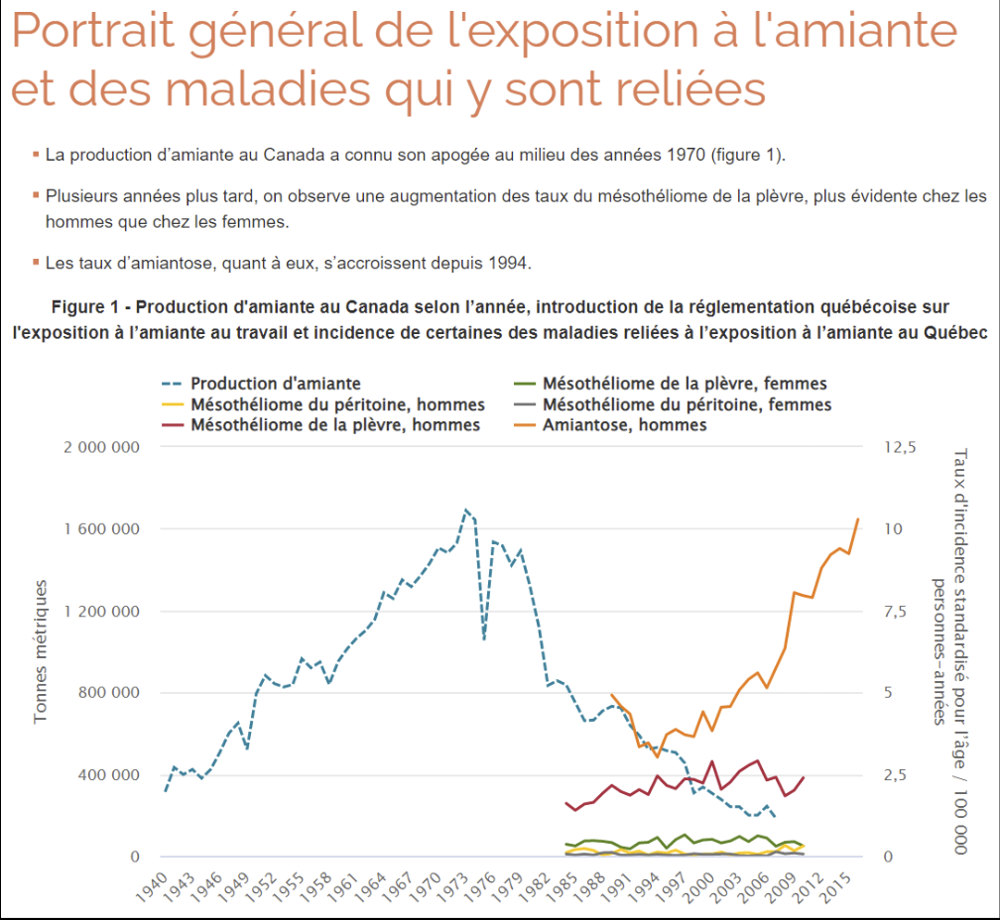
Toucher l'image pour l'agrandir| Maladie | Description | Latence |
|---|---|---|
| Asbestose (amiantose) | Fibrose pulmonaire interstitielle | 10-20 ans |
| Mésothéliome | Cancer de la plèvre ou du péritoine, quasi spécifique de l'amiante | 15-40 ans |
| Cancer du poumon | Risque multiplicatif, synergie majeure avec le tabac. Voir Cancérogénicité | 15-30 ans |
| Cancer du larynx | Reconnu CIRC | Variable |
| Cancer de l'ovaire | Reconnu CIRC | Variable |
| Plaques pleurales | Calcifications, marqueur d'exposition (pas une maladie en soi) | 20+ ans |
| Épanchement pleural bénin | Plus précoce | 10-15 ans |
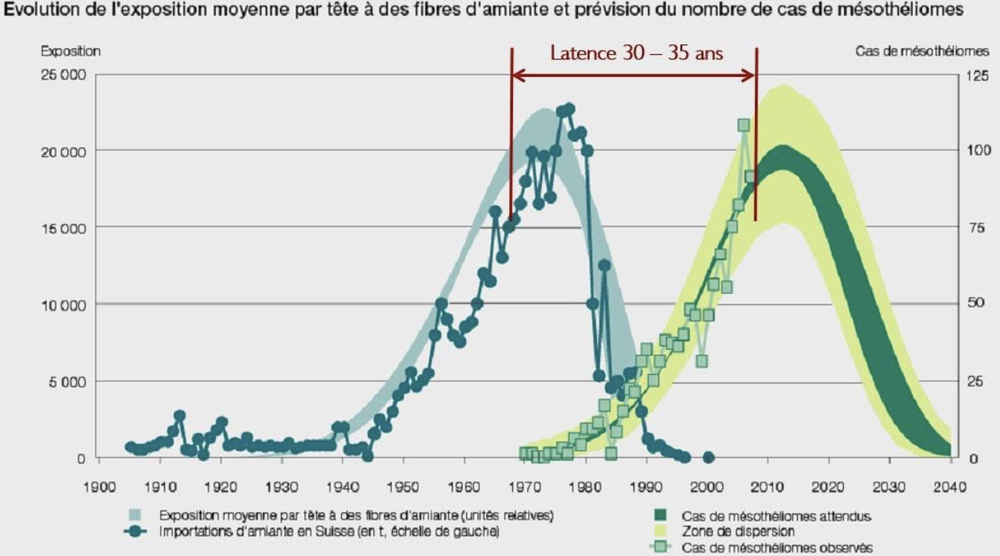
Toucher l'image pour l'agrandirMécanismes
- Réactivité chimique de surface des fibres.
- Surface d'échange (rapport surface / volume).
- Dimension : fibres longues et fines plus dangereuses.
- Persistance dans le corps : les macrophages alvéolaires n'arrivent pas à les phagocyter complètement.
- Inhalation de fibres respirables, persistance dans les alvéoles, inflammation chronique. Voir ADME, cheminement des contaminants dans l'organisme.
Données québécoises (MADO 2006-2015)
- 2 234 cas de MADO reliées à l'amiante.
- 98 % hommes.
- Secteurs principaux (~60-70 % des cas) : Bâtiments et travaux publics ; Mines, carrières et puits de pétrole ; Fabrication d'équipement de transport.
- Métiers : travailleurs du bâtiment, mineurs, carriers, foreurs.
- Femmes : mésothéliomes prédominent ; hommes : amiantose prédomine.
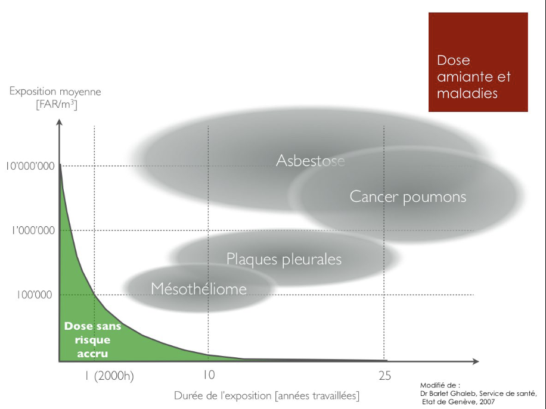
Toucher l'image pour l'agrandirVoir Aérosols.
Réglementation
Gouvernement fédéral
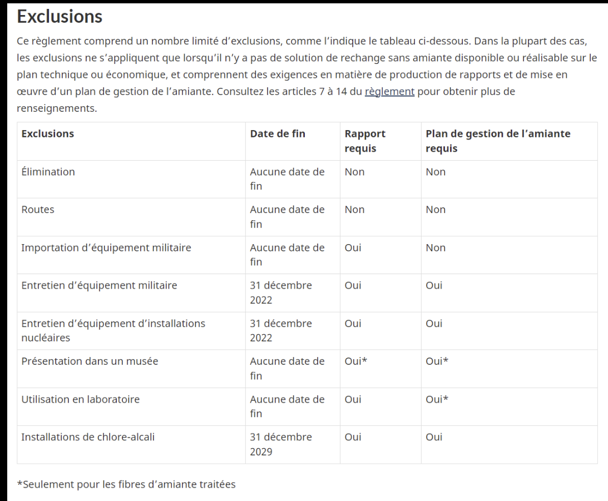
Toucher l'image pour l'agrandir- 2012 : arrêt de la production canadienne.
- 30 décembre 2018 : Règlement interdisant l'amiante et les produits contenant de l'amiante (LCPE). Interdiction de vente, d'importation et d'utilisation.
- Exceptions limitées : résidus miniers en place, certains usages militaires.
LSST (rôle de l'employeur, art. 51)
- Équipements et aménagements sécuritaires.
- Méthodes et techniques sécuritaires.
- Fournir matériel sécuritaire, EPI.
- Empêcher l'émission de contaminants.
Voir LSST pour le détail des obligations.
RSST (depuis juin 2013, gestion amiante)
Articles clés
| Art. | Disposition |
|---|---|
| 45 | Équipement de protection |
| 62 | Gestion des poussières et rebuts |
| 63 | Surveêtement |
| 66 | Vêtement de travail |
| 67 | Vestiaire double |
Le vestiaire double permet la séparation physique des vêtements propres et contaminés.
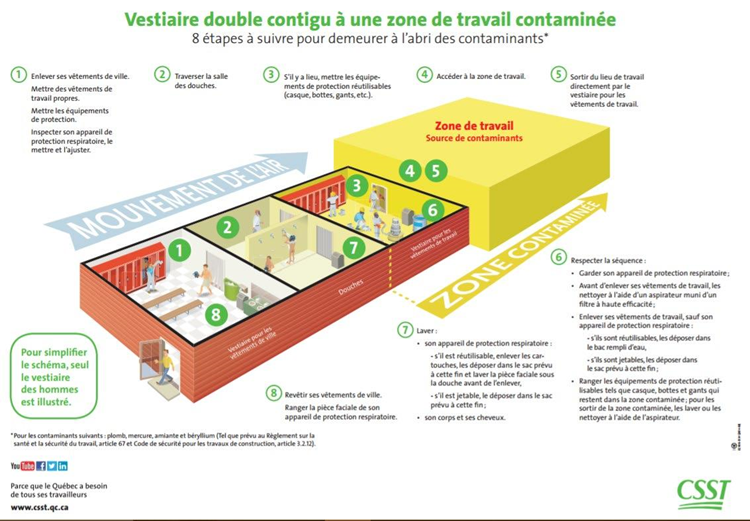
Toucher l'image pour l'agrandirCSTC (Code de sécurité pour les travaux de construction)
| Art. | Disposition |
|---|---|
| 1.1.1.2 | Définition d'amiante |
| 1.1.29.1 | Poussières d'amiante |
| 3.23 | Contenant d'amiante (≥ 0,1 %) |
| 3.23.3 | Rôle de l'employeur, identification du type d'amiante |
| 3.23.7 | Formation / information |
| 3.23.8 | Avant les travaux dans un bâtiment |
| 3.23.12 | À la fin des travaux |
| 3.23.14.1 | Risque faible |
| 3.23.15 | Risque modéré |
| 3.23.16 | Risque élevé |
Normes d'exposition
RSST (Québec)
Voir VEA et normes RSST pour le cadre général.
| Type | VEMP (8 h) | VECD (15 min) | Notations |
|---|---|---|---|
| Chrysotile, anthophyllite, trémolite, actinolite | 1 f/cm³ | 5 f/cm³ | C1, EM, RP |
| Crocidolite, amosite | 0,2 f/cm³ | 1 f/cm³ | C1, EM, RP |
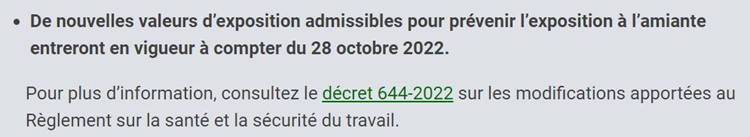
Toucher l'image pour l'agrandirACGIH
- Toutes formes : 0,1 f/cm³ (TLV-TWA), notation A1 (cancérogène humain confirmé).
L'unité f/cm³ (équivalent f/cc) est utilisée pour les fibres (concentration numérique, fraction respirable, fibres ≥ 5 µm).
Gestion de l'amiante
Suivre la Hiérarchie des moyens de prévention et la Démarche AREC sur les chantiers.
Niveaux de risque (CSTC)
Le CSTC distingue trois niveaux de risque selon l'ampleur et le type de travaux.
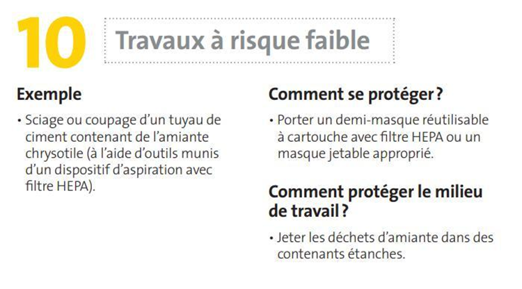
Toucher l'image pour l'agrandir| Risque | Caractéristique | Exigences |
|---|---|---|
| Faible | Travaux simples, faible empoussiérage | Mesures de base, formation |
| Modéré | Travaux avec empoussiérage modéré | Confinement, profondeur et charge mentale, EPI, dépressurisation |
| Élevé | Démolition, retrait, gros chantiers | Confinement total, EPI complet, surveillance médicale |
Mesures pour risque modéré.
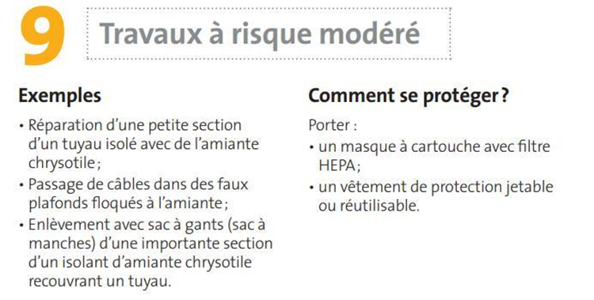
Toucher l'image pour l'agrandirMesures pour risque élevé.
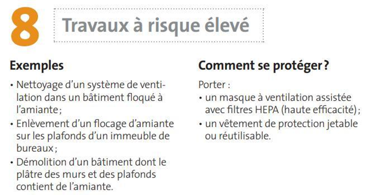
Toucher l'image pour l'agrandirÉtapes de gestion
- Inventaire des matériaux susceptibles de contenir de l'amiante.
- Caractérisation (échantillonnage, analyse en laboratoire).
- Identification par étiquetage et signalisation.
- Gestion : maintien en bon état ou retrait selon le risque.
- Communication aux travailleurs, sous-traitants, occupants.
- Surveillance médicale des travailleurs exposés.
EPI et bonnes pratiques
- Protection respiratoire (APR) adapté (P100, ½ masque ou complet selon facteur de protection requis).
- Vêtements jetables, surveêtements.
- Vestiaire double (vêtements propres / contaminés).
- Décontamination des outils.
- Humidification, ventilation HEPA.
- Aucun air comprimé pour le nettoyage (envoie les fibres en suspension).
Autres fibres minérales
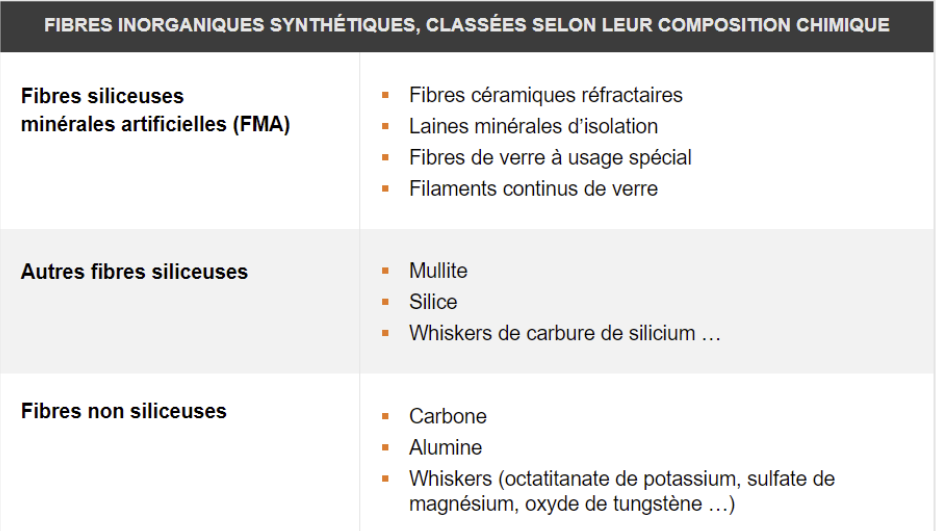
Toucher l'image pour l'agrandirFibres céramiques réfractaires (FCR)
- Usage : isolation à très haute température (> 1000 °C).
- Au-delà de 1000 °C : peuvent former de la cristobalite (silice cristalline, C1).
- L'INRS les considère potentiellement aussi dangereuses que l'amiante.
- Classement CIRC : 2B.
Laines minérales (verre, roche, laitier)
- Usage : isolation du bâtiment.
- CIRC : groupe 3 (insufficient evidence) pour les laines actuelles biosolubles.
- Effets aigus : irritation cutanée, oculaire, respiratoire.
Talc fibreux
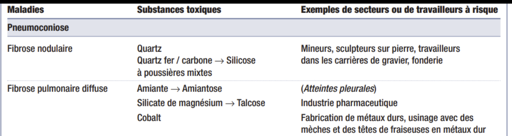
Toucher l'image pour l'agrandir- Talc contenant ≥ 0,1 % d'amiante ou de silice cristalline = considéré C1 (talcose).
- Talc pur (sans amiante ni silice) = talcose non fibreuse, moins préoccupante.
- Polémique : association talc / cancer de l'ovaire = lien possible via contamination amiante.
Nanotubes de carbone (CNT)
- Voir Nanoparticules.
- Certains CNT à haut rapport L/D présentent une toxicité de type amiante (mésothéliome chez la souris). CIRC 2B pour MWCNT-7.
Fibres organiques
- Coton (byssinose), lin (cannabose) : poumon brun.
- Aramides : peu d'effets démontrés en exposition normale.
Application terrain
Sources d'amiante en site minier
| Source | Contexte | Risque | Mesure prioritaire |
|---|---|---|---|
| Bâtiments construits avant 1990 (administratif, atelier, infirmerie) | Isolation, planchers, joints | Variable selon état | Inventaire amiante de tous les bâtiments |
| Calorifuges sur tuyauterie d'usine de procédé (concentrateurs anciens, smelters) | Procédé minier | Modéré à élevé | Inventaire, étiquetage, programme de retrait |
| Pièces de friction (freins de gros engins miniers) | Pièces de remplacement archivées, équipements anciens | Modéré | Sensibilisation mécaniciens, remplacement par alternatives |
| Joints et garnitures industrielles | Pompes, vannes anciens | Ponctuel à l'entretien | Procédure mécanique, sous-traitance spécialisée |
| Anciennes mines d'amiante (Thetford, Asbestos) reconverties | Roche encaissante naturelle | Cas particulier | Encadrement très spécifique |
| Talc fibreux dans certains gisements | Roche encaissante | Variable | Caractérisation minéralogique |
| Fibres céramiques (isolation haute T des fours métallurgiques) | Smelter, four | Chronique | Substitution, EPI |
Pratique en site minier
- Inventaire amiante de tous les bâtiments du site (registre obligatoire).
- Procédure obligatoire avant tout travail de démolition, rénovation ou perçage en bâtiment ancien.
- Coordination avec sous-traitants spécialisés en désamiantage pour les chantiers de risque modéré ou élevé.
- Sensibilisation des mécaniciens à l'historique des pièces de friction sur engins datant d'avant l'interdiction.
Ressources
| Document | Type | Source |
|---|---|---|
| Règlement interdisant l'amiante (LCPE 2018) | Loi | Lois fédérales |
| RSST gestion amiante (art. 62-67) | Règlement | LégisQuébec |
| CSTC section 3.23 | Règlement | LégisQuébec |
| Guide gestion sécuritaire de l'amiante | Guide | CNESST, rôles et pouvoirs |
| Registre amiante (bâtiment) | Gabarit | À développer en interne |
Articles wiki connexes
- Aérosols
- Maladies professionnelles en mine
- Protection respiratoire (APR)
- SIMDUT et classes de danger
- Cancérogénicité
- Toxicité du système respiratoire
- Nanoparticules
- Métaux toxiques en milieu de travail
← Accueil
�����������������������������������������������������������������������������������������������������������������������������������������������������������������������������������������������������������������������������������������������������������������������������������������������������������������������������������������������������������������������������������������������������������������������������������������������������������������������������������������������������������������������������������������������������������������������������������
Pages qui pointent ici (4)
- Métaux toxiques en milieu de travail Toxicologie
- Nanoparticules Toxicologie
- SIMDUT et classes de danger Toxicologie
- Substances dangereuses Toxicologie